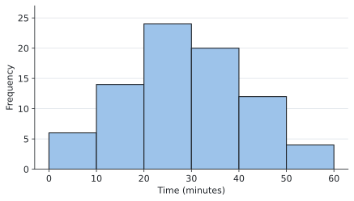
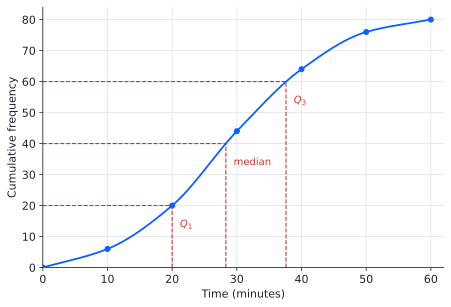
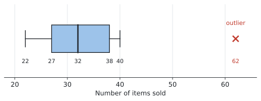
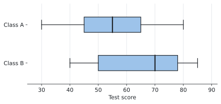

SL 4.2 — Presentation of data（データの表し方 — 度数分布・ヒストグラム・箱ひげ図）
- frequency distribution table（度数分布表）を読み、作れる。
- class interval（階級）の不等式の書き方を正しく読める。
- histogram（ヒストグラム）をかき、読み取れる。
- cumulative frequency（累積度数）の表とグラフを作れる。
- 累積度数グラフから median・quartile・percentile・range・IQR を読み取れる。
- box and whisker diagram（箱ひげ図）をかき、外れ値を \(\times\) で示せる。
- 2つの箱ひげ図を比べて、違いを英語で説明できる。
- 箱ひげ図の左右対称さから、正規分布に近いかどうかを判断できる。
SL 4.2 の欄には、次の1行だけが印刷されています。
\[ \text{IQR} = Q_3 - Q_1 \]
これだけです。 あとは「かき方」と「読み取り方」なので、公式ではなく手順を身につける項目です。
シラバスの Guidance 欄に、次の一文があります。
Not required: Frequency density histograms.
frequency density（度数密度）のヒストグラムは出ません。 つまり、階級の幅がバラバラなヒストグラムは扱いません。
Frequency histograms with equal class intervals.
階級の幅は、いつも等しいという前提です。
日本の教科書では「相対度数」や、幅の違う階級の話が出てくることがありますが、AI SL では必要ありません。 ここに時間を使わないでください。
The idea
この項目は、同じデータを4つの形で表すことを学びます。
- frequency distribution table ── 表にまとめる
- histogram ── 形を見る
- cumulative frequency graph ── 中央値や四分位数を読み取る
- box and whisker diagram ── 5つの数で要約し、他と比べる
どれも同じデータです。 目的によって見せ方を変えているだけ、と思ってください。
このページでは、1つのデータをずっと使います。 ある学校で、生徒 \(80\) 人の通学時間を調べたものです。
1. frequency distribution table と class interval
データを区間ごとに数えた表が frequency distribution table です。区間のことを class interval（階級）といいます。
| Time, \(t\) (minutes) | Frequency |
|---|---|
| \(0 \leq t < 10\) | 6 |
| \(10 \leq t < 20\) | 14 |
| \(20 \leq t < 30\) | 24 |
| \(30 \leq t < 40\) | 20 |
| \(40 \leq t < 50\) | 12 |
| \(50 \leq t < 60\) | 4 |
合計は \(6 + 14 + 24 + 20 + 12 + 4 = 80\) 人です。表を見たら、まず合計を確かめる習慣をつけてください。
不等式の向きに意味があります
シラバスに、次のように書かれています。
Class intervals will be given as inequalities, without gaps.
階級は必ず不等式で書かれ、すきまがありません。 \(0 \leq t < 10\) の次が \(10 \leq t < 20\) です。
ここで大事なのは、ちょうど \(10\) 分の人がどちらに入るかです。
\[ 0 \leq t < 10 \quad \text{には } 10 \text{ が}\textbf{入らない} \]
\[ 10 \leq t < 20 \quad \text{には } 10 \text{ が}\textbf{入る} \]
左は \(\leq\)、右は \(<\)。 ちょうど境目の値は、下の階級ではなく上の階級に入ります。
\(0 \leq t < 10\)、\(10 \leq t < 20\) のように書かれていれば、どの値も必ずどこか1つの階級に入ります。 迷う値はありません。
もし「\(0\)〜\(9\)」「\(10\)〜\(19\)」のような書き方だったら、\(9.5\) 分の人がどこにも入らなくなってしまいます。不等式で書くのは、そのすきまをなくすためです。
時間や長さのような continuous data では、この書き方でないと困ります。
mid-interval value（階級値）
各階級のまん中の値を mid-interval value（階級値）といいます。
\[ 0 \leq t < 10 \quad \longrightarrow \quad \frac{0 + 10}{2} = 5 \]
この表なら \(5, 15, 25, 35, 45, 55\) です。
この項目では使いませんが、SL 4.3 で平均を求めるときに使います。 「階級のまん中で代表させる」という考え方だとだけ覚えておいてください。
2. histogram
frequency distribution table をそのまま棒にしたものが histogram です。

横軸は時間、縦軸は度数（人数）です。表 1 の数字がそのまま棒の高さになっています。
棒と棒のあいだを空けない
これが histogram の一番の特徴です。
- histogram … 棒どうしがくっついている
- bar chart（棒グラフ）… 棒どうしが離れている
くっつけるのは、横軸が連続した量（時間・長さ・重さ）だからです。\(10\) 分と \(20\) 分のあいだにも時間はつながって存在しています。
一方、棒グラフの横軸は「好きなスポーツ」のようにバラバラの項目なので、離して書きます。
答案でヒストグラムをかくときは、必ず棒をくっつけてください。
3. cumulative frequency（累積度数）
cumulative frequency は、その階級までの合計です。上から順に足していきます。
| Time, \(t\) (minutes) | Frequency | Cumulative frequency |
|---|---|---|
| \(0 \leq t < 10\) | 6 | 6 |
| \(10 \leq t < 20\) | 14 | 20 |
| \(20 \leq t < 30\) | 24 | 44 |
| \(30 \leq t < 40\) | 20 | 64 |
| \(40 \leq t < 50\) | 12 | 76 |
| \(50 \leq t < 60\) | 4 | 80 |
\(6\)、\(6+14=20\)、\(20+24=44\) … と足していくだけです。一番下は必ずデータの個数（ここでは \(80\)）になります。 ならなければ、どこかで計算を間違えています。
cumulative frequency graph は「階級の上端」に点を打ちます
この表をグラフにしたものを cumulative frequency graph（累積度数グラフ）といいます。ここが一番間違えやすいところです。
累積度数 \(20\) は「\(20\) 分未満の人が \(20\) 人」という意味です。ですから、この点は \(t = 20\) のところに打ちます。\(t = 15\)（階級値）ではありません。
histogram とは打つ場所が違います。 ヒストグラムは階級の幅ぜんぶを棒にしますが、cumulative frequency graph は階級の上端 1 点だけに打ちます。「その値までに何人たまったか」を表しているからです。

左端は \((0, 0)\) から始めます。 \(0\) 分未満の人は \(0\) 人だからです。
cumulative frequency graph は、フリーハンドのなめらかな曲線でつなぎます。定規は使いません。
- ✗ 点と点を定規で結んで、折れ線にする
- ◎ 点をぜんぶ通るように、なめらかな曲線を1本かく
図 2 も、そのようにかいてあります。だから、この曲線を cumulative frequency curve とも呼びます。
縦軸と横軸の目盛りをかくときだけ、定規を使ってください。 曲線そのものは手でかきます。読み取りの補助線（横→縦の線）は、定規でかいて構いません。
グラフからの読み取り方
縦軸から入って、横軸に出ます。
| 読みたいもの | 縦軸のどこから読むか | この例では |
|---|---|---|
| median | \(\dfrac{n}{2} = 40\) | 約 \(28\) 分 |
| \(Q_1\) | \(\dfrac{n}{4} = 20\) | \(20\) 分 |
| \(Q_3\) | \(\dfrac{3n}{4} = 60\) | 約 \(38\) 分 |
| 90th percentile | \(0.9 \times 80 = 72\) | 約 \(46\) 分 |
手順はいつも同じです。
- 縦軸の値を決める（\(n\) を使って計算する）
- そこから横に線を引き、グラフにぶつける
- そこから下に線を下ろし、横軸を読む
答案には、その線を実際にかいてください。 読み取ったことが採点者に伝わります。
そして、
\[ \text{IQR} = Q_3 - Q_1 = 38 - 20 = 18 \ \text{分} \]
range（範囲）は、一番大きい値から一番小さい値を引いたものです。この表からは正確には分かりませんが、\(60 - 0 = 60\) 分と見積もれます。
\(p\) th percentile は、下から \(p\%\) のところにある値です。
- 25th percentile ＝ \(Q_1\)
- 50th percentile ＝ median
- 75th percentile ＝ \(Q_3\)
ですから percentile は、四分位数を細かくしたものだと思えば十分です。\(90\) th なら \(0.9 \times n\) を縦軸から読みます。
逆向きに聞かれることもあります。 「\(45\) 分より長くかかる生徒は何人か」なら、横軸の \(45\) から上に線を引いてグラフにぶつけ、縦軸を読んで、\(80\) から引きます。
4. box and whisker diagram（箱ひげ図）
5つの数だけでデータを要約したものが box and whisker diagram です。
| 名前 | 意味 |
|---|---|
| minimum | 一番小さい値 |
| \(Q_1\) | 第1四分位数 |
| median | 中央値 |
| \(Q_3\) | 第3四分位数 |
| maximum | 一番大きい値 |
箱の両端が \(Q_1\) と \(Q_3\)、箱の中の線が median、ひげの先が最小値と最大値です。
外れ値は \(\times\) で示します
シラバスに、はっきり書かれています。
Outliers should be indicated with a cross.
外れ値は、点ではなく \(\times\) でかきます。 そして、ひげはその手前で止めます。
次の図は、ある店の \(11\) 日ぶんの販売個数です。
\[ 22, \quad 25, \quad 27, \quad 28, \quad 30, \quad 32, \quad 34, \quad 36, \quad 38, \quad 40, \quad 62 \]

\(62\) が外れ値（SL 4.1 の \(1.5 \times \text{IQR}\) で判定）なので \(\times\) で示し、ひげは \(40\) で止めています。
外れ値をひげの先にしてしまうと、間違いです。 ひげの先は「外れ値でない中で一番大きい値」です。
2つを比べる
シラバスは、比べることを求めています。
Use of box and whisker diagrams to compare two distributions, using symmetry, median, interquartile range or range.
比べる観点は、この4つです。

| Class A | Class B | |
|---|---|---|
| median | \(55\) | \(70\) |
| IQR | \(65 - 45 = 20\) | \(78 - 50 = 28\) |
| range | \(80 - 30 = 50\) | \(85 - 40 = 45\) |
数字を出すだけでは点になりません。 「だから何が言えるか」を言葉で書きます。例 5 で型を示します。
左右対称かどうかで、正規分布かを見る
シラバスにもう1行あります。
Determining whether the data may be normally distributed by consideration of the symmetry of the box and whiskers.
箱ひげ図が左右対称なら、normal distribution（正規分布、SL 4.9）に近いかもしれない、という見方です。
確かめるのは2つです。
- median が箱のまん中にあるか（\(\text{median} - Q_1\) と \(Q_3 - \text{median}\) が同じくらいか）
- 左右のひげの長さが同じくらいか
Class A では \(55 - 45 = 10\)、\(65 - 55 = 10\) でぴったり同じです。ひげも \(15\) と \(15\) で同じです。左右対称なので、正規分布に近いかもしれません。
Class B では \(70 - 50 = 20\)、\(78 - 70 = 8\) で大きく違います。対称ではないので、正規分布とは考えにくいです。
箱ひげ図が対称でも、正規分布だと証明できたわけではありません。
答案では may be normally distributed（正規分布かもしれない）と書きます。シラバスの言葉も may be です。言い切らないでください。
Why it works
ここでは、なぜ累積度数のグラフを「階級の上端」に打つのかだけを説明します。
累積度数 \(20\) は、\(0 \leq t < 20\) に入る人数、つまり「\(20\) 分未満の人が \(20\) 人」という意味でした。
このとき、\(20\) 人という数が確実に言えるのは \(t = 20\) に来たときだけです。\(t = 15\) の時点では、\(10 \leq t < 20\) の \(14\) 人のうち何人が \(15\) 分未満かは分かりません。表からは読み取れないのです。
だから、確実に分かる点だけを打って、あいだをなめらかにつなぎます。 その「確実に分かる点」が階級の上端です。
\[ (10,\ 6), \quad (20,\ 20), \quad (30,\ 44), \quad \ldots \]
点と点のあいだは、分からないところを補っているだけです。ですから、グラフから読んだ median はあくまで推定値です。
答えが少しずれても構いません。 IB もグラフの読み取りには幅を持たせて採点します。
Worked examples
問題文は英語です。意味が理解できなかったら、問題文の下の「日本語訳」を開いてください。解説は日本語です。
例題 1 The table shows the times, in minutes, taken by \(80\) students to travel to school.
| Time, \(t\) (minutes) | Frequency |
|---|---|
| \(0 \leq t < 10\) | 6 |
| \(10 \leq t < 20\) | 14 |
| \(20 \leq t < 30\) | 24 |
| \(30 \leq t < 40\) | 20 |
| \(40 \leq t < 50\) | 12 |
| \(50 \leq t < 60\) | 4 |
(a) Write down the modal class.
(b) A student takes exactly \(30\) minutes. State which class interval this student belongs to.
(c) Find the number of students who take less than \(40\) minutes.
日本語訳
表は、生徒 \(80\) 人が学校まで通うのにかかった時間（分）です。表の見出しは Time が「時間」、Frequency が「度数」です。
(a) 最頻階級（modal class）を書きなさい。
(b) ちょうど \(30\) 分かかった生徒がいます。この生徒がどの階級に入るかを答えなさい。
(c) \(40\) 分未満の生徒の人数を求めなさい。
(a) modal class は、度数が一番大きい階級です。\(24\) が一番大きいので、
\[ 20 \leq t < 30 \]
「\(24\)」と答えないでください。 聞かれているのは階級なので、不等式で書きます。
(b) 不等式の向きの話です。
\(20 \leq t < 30\) には \(30\) が入りません（右が \(<\) だから）。\(30 \leq t < 40\) には \(30\) が入ります（左が \(\leq\) だから）。
ですから \(30 \leq t < 40\) です。
(c) 「\(40\) 分未満」は、上から3つの階級を足します。
\[ 6 + 14 + 24 + 20 = 64 \]
これは累積度数そのものです。\(40\) までの累積が \(64\) 人です。
(a) \(20 \leq t < 30\)
(b) \(30 \leq t < 40\)
(c) \(6 + 14 + 24 + 20 = 64\) students
例題 2 Using the data in 表 6:
(a) Complete a cumulative frequency table.
(b) Use your cumulative frequency graph to estimate the median, \(Q_1\) and \(Q_3\).
(c) Find the interquartile range.
日本語訳
表 6 のデータについて、
(a) 累積度数の表を完成させなさい。
(b) 累積度数グラフを使って、中央値、\(Q_1\)、\(Q_3\) を推定しなさい。
(c) 四分位範囲を求めなさい。
（estimate は「だいたいの値を出す」という指示です。グラフから読み取ります。）
(a) もとの表に列を1つ足して、上から順に足していきます。
| Time, \(t\) (minutes) | Frequency | Cumulative frequency |
|---|---|---|
| \(0 \leq t < 10\) | 6 | 6 |
| \(10 \leq t < 20\) | 14 | 20 |
| \(20 \leq t < 30\) | 24 | 44 |
| \(30 \leq t < 40\) | 20 | 64 |
| \(40 \leq t < 50\) | 12 | 76 |
| \(50 \leq t < 60\) | 4 | 80 |
\[ 6, \quad 6+14 = 20, \quad 20+24 = 44 \]
\[ 44+20 = 64, \quad 64+12 = 76, \quad 76+4 = 80 \]
一番下が \(80\)（データの個数）になっているか確かめてください。
Complete a cumulative frequency table と言われたら、数字を並べるだけでなく、表の形で書いてください。 試験では、この列が空欄になった表が印刷されています。
(b) グラフは 図 2 です。\(n = 80\) なので、
\[ \text{median} : \ \frac{80}{2} = 40, \qquad Q_1 : \ \frac{80}{4} = 20, \qquad Q_3 : \ \frac{3 \times 80}{4} = 60 \]
この3つの値を縦軸から読み、横に線を引いてグラフにぶつけ、下に下ろします。
\[ \text{median} \approx 28, \qquad Q_1 = 20, \qquad Q_3 \approx 38 \]
\(Q_1\) はちょうど点の上（\((20, 20)\)）に来るので、\(20\) 分と読めます。
\(28\) と \(38\) は「約」で構いません。 median を \(27\) や \(29\)、\(Q_3\) を \(37\) や \(39\) と読んでも正解です。estimate なので、幅を持たせて採点されます。
(c) 公式集の式を使います。
\[ \text{IQR} = Q_3 - Q_1 = 38 - 20 = 18 \ \text{minutes} \]
(a)
| Time, \(t\) (minutes) | Cumulative frequency |
|---|---|
| \(0 \leq t < 10\) | 6 |
| \(10 \leq t < 20\) | 20 |
| \(20 \leq t < 30\) | 44 |
| \(30 \leq t < 40\) | 64 |
| \(40 \leq t < 50\) | 76 |
| \(50 \leq t < 60\) | 80 |
(b) median \(\approx 28\) min, \(Q_1 = 20\) min, \(Q_3 \approx 38\) min
(c) \(\text{IQR} = 38 - 20 = 18\) minutes
例題 3 Use 図 2 to answer the following.
(a) Estimate the \(90\)th percentile.
(b) Estimate the number of students who take more than \(45\) minutes.
(a) 下から \(90\%\) のところなので、縦軸の
\[ 0.9 \times 80 = 72 \]
から読みます。\(72\) から横に線を引くと、\(t \approx 46\) 分のあたりでグラフにぶつかります。
\[ 90\text{th percentile} \approx 46 \ \text{minutes} \]
意味は「生徒の \(90\%\) は \(46\) 分以内に着いている」ということです。
(b) これは逆向きの読み取りです（percentile の欄）。
横軸の \(45\) から上に線を引くと、累積度数は約 \(71\) です。これは「\(45\) 分未満が約 \(71\) 人」という意味なので、
\[ 80 - 71 = 9 \ \text{students} \]
引き算を忘れないでください。 グラフから読めるのは「〜未満」の人数です。「〜より多い」を聞かれたら、全体から引きます。
(a) \(0.9 \times 80 = 72\)
\(90\)th percentile \(\approx 46\) minutes
(b) From the graph, about \(71\) students take less than \(45\) minutes.
\[80 - 71 = 9 \ \text{students}\]
例題 4 The number of items sold in a shop on \(11\) days is
\[ 22, \quad 25, \quad 27, \quad 28, \quad 30, \quad 32, \quad 34, \quad 36, \quad 38, \quad 40, \quad 62 . \]
(a) Write down the five-number summary.
(b) Show that \(62\) is an outlier.
(c) Draw a box and whisker diagram for this data.
日本語訳
ある店で \(11\) 日間に売れた商品の個数は次のとおりです。
\[ 22, \quad 25, \quad 27, \quad 28, \quad 30, \quad 32, \quad 34, \quad 36, \quad 38, \quad 40, \quad 62 \]
(a) 5数要約（five-number summary）を書きなさい。
(b) \(62\) が外れ値であることを示しなさい。
(c) このデータの箱ひげ図をかきなさい。
（Show that は「与えられた結論に向かって、途中を全部書く」、Draw は「定規と目盛りを使って正確にかく」という指示です。）
(a) 電卓の One-Variable Statistics に入れると出ます（GDCの使い方）。
\[ \text{min} = 22, \quad Q_1 = 27, \quad \text{median} = 32, \quad Q_3 = 38, \quad \text{max} = 62 \]
(b) SL 4.1 の \(1.5 \times \text{IQR}\) の決まりを使います。
\[ \text{IQR} = 38 - 27 = 11 \]
\[ 1.5 \times \text{IQR} = 16.5 \]
\[ Q_3 + 16.5 = 38 + 16.5 = 54.5 \]
\(62 > 54.5\) なので、\(62\) は外れ値です。
Show that なので、この数字を全部書いてください。 結論だけでは点になりません。
(c) かき方は 図 3 のとおりです。外れ値を \(\times\) でかき、ひげをその手前で止めるのがポイントです。
外れ値でない中で一番大きいのは \(40\) なので、右のひげは \(40\) までです。\(62\) まで伸ばしてはいけません。
(a) min \(= 22\), \(Q_1 = 27\), median \(= 32\), \(Q_3 = 38\), max \(= 62\)
(b) \(\text{IQR} = 38 - 27 = 11\)
\[1.5 \times \text{IQR} = 16.5\] \[Q_3 + 16.5 = 54.5\]
Since \(62 > 54.5\), the value \(62\) is an outlier.
(c) Box from \(27\) to \(38\), median line at \(32\). Whiskers to \(22\) and \(40\). The outlier \(62\) is marked with a cross.
例題 5 The box and whisker diagrams show the test scores of two classes.
(a) Compare the test scores of the two classes.
(b) State, with a reason, which class may be normally distributed.
日本語訳
箱ひげ図は、2つのクラスのテストの点を表しています。
(a) 2つのクラスのテストの点を比較しなさい。
(b) どちらのクラスが正規分布に近いと考えられるか、理由をつけて答えなさい。
（Compare は「両方に触れて違いを述べる」、State, with a reason は「答えと理由の両方を書く」という指示です。）
(a) 比べる観点は4つでした。symmetry・median・IQR・range です。
まず数字を出します。
| Class A | Class B | |
|---|---|---|
| median | \(55\) | \(70\) |
| IQR | \(65 - 45 = 20\) | \(78 - 50 = 28\) |
| range | \(80 - 30 = 50\) | \(85 - 40 = 45\) |
ここで終わってはいけません。 数字が何を意味するかを書きます。
- median が高い → B のほうが点が高かった
- IQR が小さい → A のほうがばらつきが小さく、そろっている
Compare は「両方に触れる」という指示です。 片方のことだけ書くと点が出ません。
(b) 左右対称かどうかを見ます。
Class A は \(55 - 45 = 10\)、\(65 - 55 = 10\) で同じ。ひげも \(45 - 30 = 15\)、\(80 - 65 = 15\) で同じです。
Class B は \(70 - 50 = 20\)、\(78 - 70 = 8\) で大きく違います。
ですから A です。may be を使って、言い切らないでください。
(a) Class B has a higher median (\(70\)) than Class A (\(55\)), so students in Class B scored higher on average.
Class A has a smaller interquartile range (\(20\)) than Class B (\(28\)), so the scores in Class A are more consistent.
(b) Class A may be normally distributed, because the median lies at the centre of the box (\(55-45 = 10\) and \(65-55 = 10\)) and the two whiskers are the same length, so the diagram is symmetric.
Common errors
棒はくっつけます。 離すと bar chart になってしまいます。
横軸が時間・長さ・重さのような連続した量だから、くっつけるのです。
点を打つのは階級の上端です。\(10 \leq t < 20\) の累積度数 \(20\) は、\(t = 15\) ではなく \(t = 20\) に打ちます。
\((0, 0)\) から始めることも忘れないでください。
点と点を定規で結んで折れ線にすると、曲線をかく点が取れません。
フリーハンドで、なめらかな曲線を1本かいてください（くわしくはこちら）。目盛りをかくときだけ定規を使います。
箱ひげ図は逆で、定規を使ってかきます。 混同しないでください。
「\(24\)」ではなく「\(20 \leq t < 30\)」です。聞かれているのは階級です。
\(20 \leq t < 30\) に \(30\) は入りません。
左が \(\leq\)、右が \(<\)。 ちょうどの値は上の階級に入ります。
ひげの先は「外れ値でない中で一番大きい（小さい）値」です。
外れ値は \(\times\) で別にかきます。シラバスに Outliers should be indicated with a cross と明記されています。
Compare で片方のことしか書かない
Compare は両方に触れるという指示です。
「A のほうがばらつきが小さい」ではなく、「A の IQR は \(20\)、B の IQR は \(28\) なので、A のほうがばらつきが小さい」と、数字を出して両方に触れてください。
median や IQR を書いただけでは点になりません。
「だから何が言えるか」を一文足してください。so students in Class B scored higher のような一文です。AI で差がつくのはここです。
箱ひげ図の対称性だけでは、正規分布だと証明できません。
may be normally distributed と書いてください。
Using your GDC (TI-Nspire CX II)
度数分布表を入れる ── 2列使います
生の数値ではなく度数分布表が与えられたときは、2つの列を使います。
ctrl + doc → 4: Add Lists & Spreadsheet列A（midpt） |
列B（freq） |
|---|---|
| 5 | 6 |
| 15 | 14 |
| 25 | 24 |
| 35 | 20 |
| 45 | 12 |
| 55 | 4 |
左の列には mid-interval value（階級値）を入れます。 階級そのものは入れられないので、まん中の値で代表させます。
One-Variable Statistics の画面で、Frequency List の欄に度数の列（freq）を選んでください。
ここが 1 のままだと、「\(5, 15, 25, 35, 45, 55\) という6個のデータ」として計算されてしまいます。 \(80\) 人ぶんになりません。
答えの \(n\) が \(80\) になっているかを必ず確かめてください。\(6\) になっていたら、この指定を忘れています。
ヒストグラムと箱ひげ図をかく
ctrl + doc → 5: Add Data & Statistics下の軸をクリックして列を選ぶと、まず点が散らばった図が出ます。そこから、
menu → Plot Type → Histogram
menu → Plot Type → Box Plotで切り替えられます。同じデータを両方の形で見られるので、行き来してみてください。
menu → Plot Properties → Add X Summary List で度数の列を指定します。
ただし、試験でヒストグラムをかくよう求められたら、手でかくのがふつうです。電卓の図は、手でかいたものが合っているかの確認に使ってください。
階級の幅を合わせる
電卓が勝手に決めた階級の幅が、問題の階級と違うことがあります。
menu → Plot Properties → Histogram Properties → Bin Settings → Equal Bin Widthで Width を \(10\)、Alignment を \(0\) にすれば、\(0 \leq t < 10\) からの区切りになります。
外れ値の表示
箱ひげ図で外れ値を \(\times\) として別に表示させるには、
menu → Plot Properties → Extend Box Plot Whiskersがオフになっている必要があります。オンにすると、ひげが外れ値まで伸びてしまいます。
電卓の箱ひげ図は確認用です。答案には、定規と目盛りを使って自分でかいてください。
Draw と指示されたら、軸に目盛りと単位を入れることも忘れないでください。目盛りのない図では、読み取った値の根拠が示せません。
Exercises
各問題に、折りたたみが3つ付いています。日本語訳、解答例（答案用紙に書くべきこと。英語です）、解説（なぜそうなるか。日本語です）。
まず自分で解いて、次に解答例と見くらべてください。解説は、合わなかったときだけ開けば十分です。
1 The table shows the masses, in grams, of \(50\) apples.
| Mass, \(m\) (grams) | Frequency |
|---|---|
| \(80 \leq m < 100\) | 5 |
| \(100 \leq m < 120\) | 13 |
| \(120 \leq m < 140\) | 18 |
| \(140 \leq m < 160\) | 10 |
| \(160 \leq m < 180\) | 4 |
(a) Write down the modal class.
(b) Find the number of apples with a mass less than \(140\) g.
(c) An apple has a mass of exactly \(120\) g. State its class interval.
日本語訳
表は、りんご \(50\) 個の重さ（グラム）です。表の見出しは Mass が「重さ」、Frequency が「度数」です。
(a) 最頻階級を書きなさい。
(b) 重さが \(140\) g 未満のりんごの個数を求めなさい。
(c) あるりんごの重さはちょうど \(120\) g です。その階級を答えなさい。
(a) \(120 \leq m < 140\)
(b) \(5 + 13 + 18 = 36\) apples
(c) \(120 \leq m < 140\)
(a) 度数が一番大きいのは \(18\) なので、その階級を不等式で書きます。「\(18\)」と書かないでください。
(b) 「\(140\) 未満」なので上から3つを足します。\(5+13+18 = 36\)。
(c) \(100 \leq m < 120\) には \(120\) が入りません（右が \(<\)）。\(120 \leq m < 140\) に入ります（左が \(\leq\)）。
合計は \(5+13+18+10+4 = 50\) ✓ 表を見たら最初に確かめておくと安心です。
2 Explain why the bars of a histogram are drawn touching each other, while the bars of a bar chart are drawn with gaps.
日本語訳
ヒストグラムの棒はくっつけてかき、棒グラフの棒はすきまを空けてかきます。その理由を説明しなさい。
In a histogram the horizontal axis shows continuous data, so the class intervals join together with no gaps between them. In a bar chart the horizontal axis shows separate categories, which are not connected, so gaps are drawn between the bars.
ポイントは continuous data かどうかです。
ヒストグラムの横軸は時間や重さのようなつながった量です。\(100\) g と \(120\) g のあいだにも重さは存在するので、すきまを作れません。
棒グラフの横軸は「好きなスポーツ」のようなバラバラの項目です。サッカーと野球のあいだには何もないので、離してかきます。
continuous と categories という2語を使えると、短くまとまります。
3 Using 表 10, complete a cumulative frequency table for the masses of the apples.
日本語訳
表 10 を使って、りんごの重さの累積度数の表を完成させなさい。
| Mass, \(m\) (grams) | Cumulative frequency |
|---|---|
| \(80 \leq m < 100\) | 5 |
| \(100 \leq m < 120\) | 18 |
| \(120 \leq m < 140\) | 36 |
| \(140 \leq m < 160\) | 46 |
| \(160 \leq m < 180\) | 50 |
上から順に足すだけです。
\[5, \quad 5+13=18, \quad 18+18=36, \quad 36+10=46, \quad 46+4=50\]
一番下が \(50\)（りんごの個数）になっているかを確かめてください。ならなければ、どこかで足し間違えています。
階級の書き方は、表 10 とそろえてください。 試験では、もとの表に Cumulative frequency の列が足された形で出ます。
ただし、それぞれの累積度数が指しているのは「階級の上端」です。\(100 \leq m < 120\) の行の \(18\) は、「\(120\) g 未満のりんごが \(18\) 個」という意味です。
ですから、グラフにするときに打つ点は \((120,\ 18)\) です。階級値 \(110\) ではありません（くわしくはこちら）。
4 A cumulative frequency graph is drawn for \(200\) pieces of data. State the cumulative frequency value that should be used to estimate each of the following.
(a) the median
(b) \(Q_1\)
(c) \(Q_3\)
(d) the \(80\)th percentile
日本語訳
\(200\) 個のデータについて累積度数グラフをかきました。次のそれぞれを推定するとき、縦軸のどの値から読み取ればよいか答えなさい。
(a) 中央値
(b) \(Q_1\)
(c) \(Q_3\)
(d) 第80百分位数
(a) \(\dfrac{200}{2} = 100\)
(b) \(\dfrac{200}{4} = 50\)
(c) \(\dfrac{3 \times 200}{4} = 150\)
(d) \(0.8 \times 200 = 160\)
\(n = 200\) を、それぞれの割合にかけるだけです。
- median は真ん中なので \(\dfrac{n}{2}\)
- \(Q_1\) は下から \(\dfrac{1}{4}\) なので \(\dfrac{n}{4}\)
- \(Q_3\) は下から \(\dfrac{3}{4}\) なので \(\dfrac{3n}{4}\)
- \(p\) th percentile は下から \(p\%\) なので \(\dfrac{p}{100} \times n\)
percentile は四分位数を細かくしたものだと思えば、全部同じ考え方です。\(Q_1\) は 25th percentile、median は 50th percentile と言い換えられます。
5 Use 図 2 to estimate the number of students who take between \(25\) and \(45\) minutes to travel to school.
日本語訳
図 2 を使って、通学時間が \(25\) 分から \(45\) 分のあいだの生徒の人数を推定しなさい。
From the graph:
Students taking less than \(45\) minutes: about \(71\)
Students taking less than \(25\) minutes: about \(31\)
\[71 - 31 = 40 \ \text{students}\]
「あいだ」は、引き算で出します。
\(45\) 分未満の人数から、\(25\) 分未満の人数を引けば、\(25\) 分から \(45\) 分のあいだの人数になります。
累積度数グラフから直接読めるのは「〜未満」の人数だけです。「〜から〜まで」は必ず2回読んで引く、と覚えてください。
グラフの読み取りなので、\(39\) や \(41\) でも正解です。答案には、読み取った2つの値も書いてください。 引き算だけ書かれていると、どこから出したのか伝わりません。
6 The times, in seconds, of \(11\) runners are
\[ 52, \quad 54, \quad 55, \quad 57, \quad 58, \quad 60, \quad 61, \quad 63, \quad 64, \quad 66, \quad 89 . \]
(a) Write down the five-number summary.
(b) Determine whether \(89\) is an outlier.
(c) State the values at the two ends of the whiskers in a box and whisker diagram for this data.
日本語訳
\(11\) 人の走者のタイム（秒）は次のとおりです。
\[ 52, \quad 54, \quad 55, \quad 57, \quad 58, \quad 60, \quad 61, \quad 63, \quad 64, \quad 66, \quad 89 \]
(a) 5数要約を書きなさい。
(b) \(89\) が外れ値かどうかを判定しなさい。
(c) このデータの箱ひげ図で、2本のひげの先の値を答えなさい。
(a) min \(= 52\), \(Q_1 = 55\), median \(= 60\), \(Q_3 = 64\), max \(= 89\)
(b) \(\text{IQR} = 64 - 55 = 9\)
\[1.5 \times \text{IQR} = 13.5\] \[Q_3 + 13.5 = 77.5\]
Since \(89 > 77.5\), the value \(89\) is an outlier.
(c) The whiskers end at \(52\) and \(66\).
(a) \(11\) 個なので、中央値は6番目の \(60\)。\(Q_1\) は下半分（1〜5番目）の真ん中で3番目の \(55\)、\(Q_3\) は上半分（7〜11番目）の真ん中で9番目の \(64\) です。電卓の One-Variable Statistics で確かめられます。
(b) SL 4.1 と同じ手順です。\(\text{IQR} = 9\)、\(1.5 \times 9 = 13.5\)、\(64 + 13.5 = 77.5\)。\(89\) はこれを超えています。
(c) ここが本題です。ひげの先は \(89\) ではありません。
\(89\) は外れ値なので \(\times\) で別にかき、ひげは外れ値でない中で一番大きい \(66\) で止めます。
左側は \(52\) が外れ値かどうかも確かめておきます。\(Q_1 - 13.5 = 55 - 13.5 = 41.5\) で、\(52 > 41.5\) なので外れ値ではありません。ですから左のひげは \(52\) までです。
7 A box and whisker diagram has \(Q_1 = 20\), median \(= 26\) and \(Q_3 = 40\). The whiskers end at \(12\) and \(50\).
State, with a reason, whether this data is likely to be normally distributed.
日本語訳
ある箱ひげ図では、\(Q_1 = 20\)、中央値 \(= 26\)、\(Q_3 = 40\) です。ひげの先は \(12\) と \(50\) です。
このデータが正規分布に近いと考えられるかどうか、理由をつけて答えなさい。
\[\text{median} - Q_1 = 26 - 20 = 6\] \[Q_3 - \text{median} = 40 - 26 = 14\]
The median is not at the centre of the box, so the diagram is not symmetric. The data is therefore unlikely to be normally distributed.
対称かどうかを見る手順そのものです。
median が箱のまん中にあるかを確かめます。左が \(6\)、右が \(14\) で、2倍以上違います。 対称ではありません。
ひげも \(20 - 12 = 8\) と \(50 - 40 = 10\) で少し違いますが、箱の非対称さのほうがはっきりしているので、そちらを理由に挙げれば十分です。
数字を出して比べてください。 「対称ではないので」だけでは、どこを見たのか伝わりません。
8 Two box and whisker diagrams show the heights of plants grown with two different fertilisers.
| Fertiliser P | Fertiliser Q | |
|---|---|---|
| minimum | 12 | 18 |
| \(Q_1\) | 20 | 24 |
| median | 26 | 30 |
| \(Q_3\) | 32 | 34 |
| maximum | 44 | 40 |
Compare the heights of the plants grown with the two fertilisers.
日本語訳
2つの箱ひげ図が、異なる2種類の肥料で育てた植物の高さを表しています。表の見出しは Fertiliser が「肥料」です。単位は cm です。
2種類の肥料で育てた植物の高さを比較しなさい。
Fertiliser Q has a higher median (\(30\) cm) than Fertiliser P (\(26\) cm), so plants grown with Q were taller on average.
Fertiliser Q has a smaller interquartile range (\(34 - 24 = 10\) cm) than Fertiliser P (\(32 - 20 = 12\) cm), so the heights of the plants grown with Q are more consistent.
Fertiliser Q also has a smaller range (\(40 - 18 = 22\) cm) than Fertiliser P (\(44 - 12 = 32\) cm).
4つの観点 ── symmetry・median・IQR・range ── から選んで書きます。
2つか3つ書けば十分です。ただし、必ず数字を出して、両方に触れてください。
型は毎回同じです。
- どちらが大きいか（数字つき）
- だから何が言えるか
so plants grown with Q were taller on average の一文が 2 にあたります。ここを書かないと点が出ません。
IQR は \(34-24 = 10\) と \(32-20 = 12\)。差は小さいですが、Q のほうがそろっていると言えます。
9 A student enters a frequency table into a GDC and finds that \(n = 6\). The table has \(6\) class intervals and a total frequency of \(120\).
Explain what the student has done wrong.
日本語訳
ある生徒が度数分布表を電卓に入れたところ、\(n = 6\) と表示されました。表には \(6\) つの階級があり、度数の合計は \(120\) です。
この生徒が何を間違えたか説明しなさい。
（本書オリジナルの問題です。）
The student did not select the frequency column in the Frequency List box. The calculator has treated the \(6\) mid-interval values as \(6\) separate data items, instead of using the frequencies. The value of \(n\) should be \(120\).
\(n = 6\) は「6個のデータ」という意味です。階級の数と同じになっているのが手がかりです。
One-Variable Statistics の Frequency List を指定し忘れると、電卓は階級値だけを6個のデータとして扱います。 度数を見ていません。
正しく指定すれば \(n = 120\) になります。
電卓で統計を出したら、まず \(n\) を見る習慣をつけてください。\(n\) が合っていれば、他の値もたいてい合っています。
10 The cumulative frequency graph in 図 2 shows the travel times of \(80\) students.
(a) Estimate the percentage of students who take less than \(30\) minutes.
(b) The school wants to identify the \(25\%\) of students with the longest travel times. Estimate the minimum travel time for these students.
日本語訳
図 2 の累積度数グラフは、生徒 \(80\) 人の通学時間を表しています。
(a) 通学時間が \(30\) 分未満の生徒の割合（パーセント）を推定しなさい。
(b) 学校は、通学時間が長いほうから \(25\%\) の生徒を知りたいと考えています。その生徒たちの通学時間の最小値を推定しなさい。
(a) From the graph, \(44\) students take less than \(30\) minutes.
\[\frac{44}{80} \times 100 = 55\%\]
(b) The longest \(25\%\) are above \(Q_3\).
\[\frac{3 \times 80}{4} = 60\]
From the graph, \(Q_3 \approx 38\) minutes.
So these students take at least about \(38\) minutes.
(a) グラフの \(t = 30\) から上に線を引くと、累積度数は \(44\) です。これを割合に直します。
\[\frac{44}{80} \times 100 = 55\%\]
人数を答えて終わりにしないでください。 percentage と指定されています。
(b) 「長いほうから \(25\%\)」は、下から \(75\%\) より上ということです。つまり \(Q_3\) を求めればよいことになります。
\[\frac{3 \times 80}{4} = 60\]
縦軸の \(60\) から読んで、約 \(38\) 分。
問題文を読み替えるところが山です。「上位 \(25\%\)」と言われたら \(Q_3\)、「下位 \(25\%\)」と言われたら \(Q_1\) です。どちらから数えているのかを、必ず確かめてください。